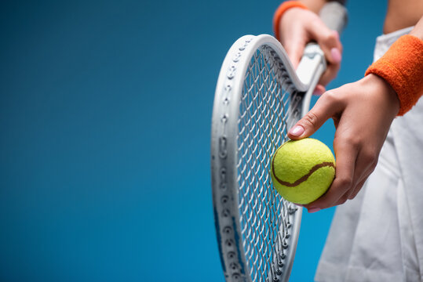

If you’re a sports enthusiast or work in the sports industry, starting a blog can be an excellent way to share your passion and expertise. Choosing a particular sport to focus on can further increase your chances of getting high-quality traffic, making it easier to monetize your blog. For example, 101 Great Goals and Who Ate All the Pies provide only soccer-based content, attracting fans who keep coming back to these sites.
Here are some of the most popular sports in the world, and each one can be used as your primary blog topic:
Football, game in which two teams of 11 players, using any part of their bodies except their hands and arms, try to maneuver the ball into the opposing team’s goal. Only the goalkeeper is permitted to handle the ball and may do so only within the penalty area surrounding the goal. The team that scores more goals wins. Carlos Alberto Torres Carlos Alberto TorresCaptain Carlos Alberto Torres holding the Jules Rimet trophy aloft after Brazil's triumph at the 1970 World Cup. Football is the world’s most popular ball game in numbers of participants and spectators. Simple in its principal rules and essential equipment, the sport can be played almost anywhere, from official football playing fields (pitches) to gymnasiums, streets, school playgrounds, parks, or beaches. Football’s governing body, the Fédération Internationale de Football Association (FIFA), estimated that at the turn of the 21st century there were approximately 250 million football players and over 1.3 billion people “interested” in football; in 2010 a combined television audience of more than 26 billion watched football’s premier tournament, the quadrennial monthlong World Cup finals.

Cricket is played with a bat and ball and involves two competing sides (teams) of 11 players. The field is oval with a rectangular area in the middle, known as the pitch, that is 22 yards (20.12 metres) by 10 feet (3.04 metres) wide. Two sets of three sticks, called wickets, are set in the ground at each end of the pitch. Across the top of each wicket lie horizontal pieces called bails. The sides take turns at batting and bowling (pitching); each turn is called an “innings” (always plural). Sides have one or two innings each, depending on the prearranged duration of the match, the object being to score the most runs. The bowlers, delivering the ball with a straight arm, try to break (hit) the wicket with the ball so that the bails fall. This is one of several ways that the batsman is dismissed, or put out.
A bowler delivers six balls at one wicket (thus completing an “over”), then a different player from his side bowls six balls to the opposite wicket. The batting side defends its wicket.
There are two batsman up at a time, and the batsman being bowled to (the striker) tries to hit the ball away from the wicket. A hit may be defensive or offensive. A defensive hit may protect the wicket but leave the batsmen no time to run to the opposite wicket. In that case the batsmen need not run, and play will resume with another bowl. If the batsman can make an offensive hit, he and the second batsman (the nonstriker) at the other wicket change places. Each time both batsmen can reach the opposite wicket, one run is scored. Providing they have enough time without being caught out and dismissed, the batsmen may continue to cross back and forth between the wickets, earning an additional run for each time both reach the opposite side. There is an outside boundary around the cricket field. A ball hit to or beyond the boundary scores four points if it hits the ground and then reaches the boundary, six points if it reaches the boundary from the air (a fly ball). The team with the highest number of runs wins a match. Should both teams be unable to complete their number of innings before the time allotted, the match is declared a draw. Scores in the hundreds are common in cricket.
Matches in cricket can range from informal weekend afternoon encounters on village greens to top-level international contests spread over five days in Test matches and played by leading professional players in grand stadiums.

Field hockey (or simply hockey) is a team sport structured in standard hockey format, in which each team plays with 11 players in total, made up of 10 field players and a goalkeeper. Teams must move a hockey ball around a field by hitting it with a hockey stick towards the rival team's shooting circle and then into the goal. The match is won by the team that scores the most goals. Matches are played on grass, watered turf, artificial turf, or indoor boarded surface. The stick is made of wood, carbon fibre, fibreglass and carbon, or a combination of carbon fibre and fibreglass in different quantities. The stick has two sides; one rounded and one flat; only the flat face of the stick is allowed to progress the ball. During play, goalkeepers are the only players allowed to touch the ball with any part of their body. A player's hand is considered part of the stick if holding the stick. If the ball is "played" with the rounded part of the stick (i.e., deliberately stopped or hit), it will result in a penalty (accidental touches are not an offence if they do not materially affect play). Goalkeepers often have a different design of stick; they also cannot play the ball with the round side of their stick.

Tennis is a racket sport that is played either individually against a single opponent (singles) or between two teams of two players each (doubles). Each player uses a tennis racket strung with a cord to strike a hollow rubber ball covered with felt over or around a net and into the opponent's court. The object of the game is to manoeuvre the ball in such a way that the opponent is not able to play a valid return. The player unable to return the ball validly will not gain a point, while the opposite player will.[1][2] Playable at all levels of society and at all ages, tennis can be played by anyone who can hold a racket, including wheelchair users. The original forms of tennis developed in France during the late Middle Ages.[3] The modern form of tennis originated in Birmingham, England, in the late 19th century as lawn tennis.[4] It had close connections to various field (lawn) games such as croquet and bowls as well as to the older racket sport today called real tennis
 go to top previous Next 2